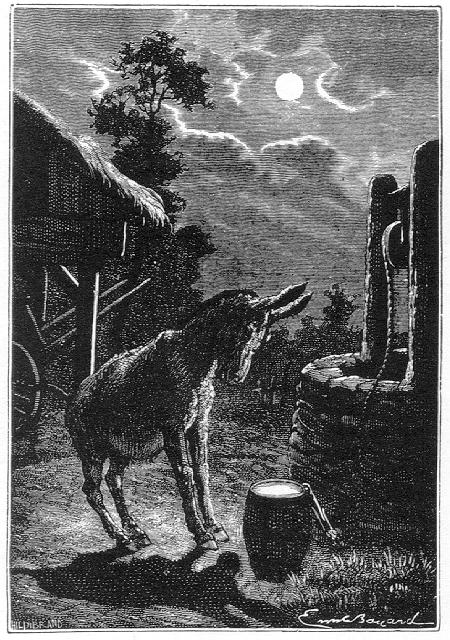
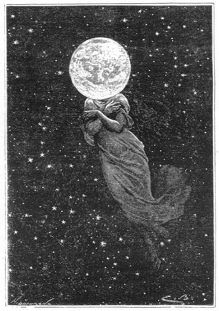

Capítol XI
FANTASIA I REALISME
-Heu vist mai la Lluna?
- preguntava irònicament un professor a un dels seus deixebles.
-No senyor - replicà l'alumne més irònicament encara -,
però sí que haig de dir que n'he sentit parlar.1

Que n'hi ha, de gent que ha sentit parlar de la Lluna
En certa manera, la graciosa resposta de l'alumne podia ésser feta per
la immensa majoria dels éssers humans sublunars. Que n'hi ha, de gent
que ha sentit parlar de la Lluna i que no l'han vista mai... almenys a través
de l'ocular d'una ullera de llarga vista o d'un telescopi! I quantes n'hi ha
que no han vist mai el mapa de llur satèl·lit!
Mirant un mapa selenogràfic, sorprèn tot seguit una particularitat.
Al contrari de la disposició que s'esdevé en la Terra i en el
planeta Mart, els continents ocupen més particularment l'hemisferi sud
del globus lunar. Aquelles continents no presenten pas aquestes línies
terminals, tan precises i tan regulars que dibuixen l'Amèrica meridional,
l'Africa i la península índia. Llurs costes anguloses, capricioses,
profundament esbocinades, són riques en golfs i en penínsules.
Recorden molt bé tot aquell embull d'illes de la Sonda, on les terres
són fraccionades amb excés. Si mai la navegació no ha existit
a la superfície de la Lluna, ha hagut d'ésser singularment difícil
i perillosa, i són ben de plànyer els mariners i els hidrògrafs
selenites, aquests quan feien l'aixecament d'aquests ribatges tan accidentats,
i aquells altres quan passaven per aquests llocs tan perillosos per a ancorar.
Hom remarcarà també que, en l'esferoide lunar, el pol Sud és
molt més continental que no el pol Nord. Aquest darrer no té més
que un lleuger casquet de terres separades dels altres dos continents per immensos
mars.2 Devers el Sud, els continents cobreixen gairebé
tot l'hemisferi. És possible, doncs, que els selenites hagin aixecat
la bandera en un de llurs pols, mentre que els Franklin, Ross, Kane, Dummont
d'Urville, Lambert, encara no han pogut atènyer aquest punt inconegut
del globus terrestre.3
Quant a les illes, aquestes són nombroses a la superfície de la
Lluna.4 Gairebé totes elles oblongues o circulars
i com traçades amb el compàs, semblen formar un immens arxipèlag,
comparable a aquest encisador grup d'illes llançat entre Grècia
i l'Asia Menor, i que la mitologia d'altre temps havia embellit amb les seves
més gracioses llegendes. Involuntàriament, els noms de Naxos,
Tenedos, Milo, Càrpats, vénen a l'esperit i hom cerca amb els
ulls la nau d'Ulisses o el clipper dels Argonautes. Això, almenys, era
el que reclamava Miquel Ardan; és que ell veia un arxipèlag grec
en el mapa. Però als ulls dels seus companys, poc fantasiosos, l'aspecte
d'aquelles costes els recordaven més aviat les terres rosegades del Nou
Brunswick i de la Nova Escòcia, i allí on el francès retrobava
les petjades de l'heroi de la faula els americans marcaven els punts favorables
per a l'establiment de despatxos en interès del comerç i de la
indústria lunars.
Per acabar la descripció de la part continental de la Lluna, direm uns
quants mots sobre la seva disposició orogràfica. Hom hi distingeix
molt clarament cadenes de muntanyes, muntanyes isolades, circs i ranures. Tot
el relleu lunar està comprès en aquesta divisió.5
Està extraordinàriament convulsionat. És una Suïssa
immensa, una Noruega contínua on l'acció plutònica ho ha
fet tot. Aquella superfície tan profundament asprívola és
el resultat de les contraccions successives de la crosta, en l'època
en què l'astre estava en vies de formació. El disc lunar, doncs,
es mostra propici a l'estudi dels grans fenòmens geològics. Segons
el parer de certs astrònoms, la seva superfície, si bé
més antiga que la superfície de la Terra, ha romàs més
nova. Allí, res d'aigües que deteriorin el relleu primitiu i l'acció
creixent de les quals produeixi una mena d'anivellament general, res d'aire
en què la influència descomponent modifiqui els perfils orogràfics.
Allí, el treball plutònic, no gens alterat per les forces neptunianes,
està en tota la seva puresa nativa. És la Terra, tal com era abans
que els pantans i els corrents d'aigua l'haguessin coberta de capes sedimentàries.
Després d'haver recorregut aquells immensos continents, la mirada és
atreta pels mars, més extensos encara. No solament llur conformació,
llur situació, llur aspecte, recorden els dels oceans terrestres, sinó
que a més, com s'esdevé a la Terra, aquests mars ocupen la més
gran part del globus. I amb tot, no són pas espais líquids, sinó
planúries de les quals els viatgers esperaven determinar aviat la natura.
Cal convenir que els astrònoms han decorat aquests pretesos mars amb
noms ben poc gallards però que la ciència ha respectat fins avui.
Miquel Ardan tenia raó quan comparava aquell mapa amb un "mapa de
la Terra", aixecat per un Scudery o un Cyrano de Bergerac.
-Solament - afegia ell - que no és pas el mapa del sentiment com en el
segle XVII, sinó que és el mapa de la vida, partit molt clarament
en dues parts, l'una femenina i l'altra masculina. A les dones, l'hemisferi
de la dreta. Als homes, l'hemisferi de l'esquerra!
I, quan Miquel parlava així, feia arronsar les espatlles als seus prosaics
companys. Barbicane i Nicholl consideraven el mapa lunar sota un altre punt
de vista que el de llur fantasiós amic. Tanmateix, llur fantasiós
amic no tenia poca raó, i, si no, que hom jutgi.6
En aquell hemisferi de l'esquerra s'estén el Mar dels Núvols,
on va tan sovint a ofegar-se la raó humana. No lluny d'ell apareix el
Mar de les Pluges, alimentat per tots els tràfecs de l'existència.
A prop d'ell s'obre el Mar de les Tempestats, on l'home lluita sense repòs
contra les seves passions massa sovint victorioses... Després, esgotat
per les decepcions, traïdories, infidelitats i tot el seguici de les misèries
terrestres, què hi troba, a la fi de la cursa? Aquest immens Mar dels
Humors amb prou feines endolcit per algunes gotes de les aigües del Golf
de la Rosada! Núvols, pluges, tempestats, humors, ¿conté
altra cosa la vida de l'home i no es resumeix tota ella en aquests quatre mots?
L'hemisferi de la dreta, "dedicat a les dones", enclou mars més
petits, en què els noms significatius comporten tots els incidents d'una
existència femenina. És el Mar de la Serenitat, damunt del qual
s'inclina la noia, i és el Llac dels Somnis que li reflecteix un rialler
avenir! És el Mar del Nèctar amb les seves ones de tendresa i
els seus ventijols d'amor! És el Mar de la Fecunditat, és el Mar
de les Crisis i després és el Mar dels Vapors, en què les
dimensions són potser massa restringides, i, en fi, és aquell
grandiós Mar de la Tranquil·litat on són engolides totes
les falses passions, tots els somnis inútils, tots els anhels insatisfets
i on les ones es vessen plàcidament al Llac de la Mort!
Quina successió més estranya de noms! Quina singular divisió
la d'aquests dos hemisferis de la Lluna, units l'un a l'altre com l'home i la
dona, i formant aquella esfera de vida enduta per l'espai! I el fantasiós
Miquel, ¿no en tenia gens, de raó, en interpretar així
aquella fantasia dels antics astrònoms?7
Però, mentre la seva imaginació recorria així els "mars",
els seus seriosos companys consideraven més geogràficament les
coses. Aprenien de cor aquell nou món. Mesuraven angles i diàmetres.8
Per Barbicane i Nicholl, el Mar dels Núvols (Mare Nubium)9
era una immensa depressió de terreny sembrada d'algunes muntanyes circulars
i cobrint una gran porció de la part occidental de l'hemisferi Sud. Ocupava
prop d'un milió de quilòmetres quadrats, i el seu centre es trobava
als 15° de latitud Sud i 20° de longitud Oest. L'oceà de les
Tempestats (Oceanus Procellarum), la més extensa planúria del
disc lunar, abraçava una superfície d'uns dos milions cinc-cents
mil km2, i el seu centre es trobava als 10° de latitud Nord i 45° de
longitud Est. Del seu si emergien les admirables muntanyes resplendents de Kleper
i Aristarc.
Més cap al Nord, i separat del Mar dels Núvols per altes serralades,
s'estenia el Mar de les Pluges (Mare Imbrium), que tenia el seu punt central
als 35° de latitud septentrional i 20° de longitud oriental; era de
forma gairebé circular i recobria un espai d'uns 880.000 km2 No gaire
lluny, el Mar dels Humors (Mare Humorum), petita cavitat d'uns 130.00 km2, estava
situada als 25° de latitud Nord i 40° de longitud Est. Finalment, tres
golfs es dibuixaven encara en el litoral d'aquell hemisferi: el Golf Tòrrid,
(Sinus Torridus), el Golf de la Rosada, (Sinus Roris) i el Golf dels Iris (Sinus
Iridum), petites planúries ofegades entre enlairades cadenes de muntanyes.

Heus aquí, doncs...
L'hemisferi "femení", més capriciós naturalment,
es distingia per mars més nombrosos. Eren, vers el Nord, el Mar del Fred
(Mare Frigoris), als 55° de latitud Nord i 0° de longitud, amb una superfície
d'uns 260.00 km2, que confinava amb el Llac de la Mort (Lacus Mortis), i amb
el Llac dels Somnis (Lacus Somniorum); el Mar de la Serenitat (Mare Serenitatis),
als 25° de latitud Nord i 20° de longitud Oest, comprenent una superfície
d'uns 325.000 km2; el Mar de les Crisis (Mare Crisium), ben delimitat i molt
arrodonit, ocupant als 17° de latitud Nord i 55° de longitud Oest, una
superfície d'uns 200.000 km2, vertader Mar Caspi ocult per un cinyell
de muntanyes. Després, a l'equador, als 5° de latitud Nord i 25°
de longitud Oest, apareixia el Mar de la Tranquil·litat (Mare Tranquillitatis),10
ocupant uns 400.000 km2, Aquest mar comunica al Sud amb el Mar del Nèctar
(Mare Nectaris), extensió d'uns 125. km2, als 15° de latitud Sud
i 35° de longitud Oest, i a l'Est amb el Mar de la Fecunditat (Mare Fecunditatis),
el més immens de tots els d'aquell hemisferi, ocupant uns 400.000 km2,
als 30° de latitud Sud i 50° de longitud Oest. Per últim, tant
al Nord com al Sud, dos altres mars es distingien encara, el Mar d'Humboldt
(Mare Humboldtianum), i el Mar Austral (Mare Australe).11
Al centre del disc lunar i cavalcant sobre l'equador i el meridià zero,
s'obria el Golf del Centre (Sinus Medii), com una mena de llaç d'unió
entre els dos hemisferis.12
Així era com es descomponia als ulls de Nicholl i de Barbicane la superfície
sempre visible del satèl·lit de la Terra, la qual cosa, tanmateix,
al digne Miquel, no li feia ni fred ni calor.
Aquest hemisferi, com pot veure's, és tretze vegades i mitja més
petit que l'hemisferi terrestre. Així i tot, els selenògrafs hi
han comptat més de cinquanta mil cràters.13
És, doncs, una superfície bofegada, esquerdada, una vertadera
escumadora, digna del qualificatiu poc poètic que li han donat els anglesos,
de green-cheese, o sia, "formatge verd".
Miquel Ardan va botar quan Barbicane digué aquest nom tan desbaratat.
-Heus aquí, doncs - exclamà -, com els anglo-saxons del segle
XIX tracten la bella Diana, la rossa Febe, la simpàtica Isis, l'encisadora
Astarté, la reina de les nits, la filla de Latona i de Júpiter,
la germana petita del radiant Apol·lo!
1. Conta aquesta anècdota escolar Francesc Aragó
en el seu llibre Història de la meva joventut; tingué lloc entre
un professor i un company seu de l'Escola Politècnica de París
el 1804. (N. del T.)
2. Que resti ben entès que amb aquest mot "mars"
designem aquests immensos espais, que, probablement, foren recoberts en altre
temps per les aigües, i que actualment no són sinó vastes
planúries.
3. En efecte, en els dies de Juli Verne l'home no havia
encara arribat a atènyer cap dels dos pols de la Terra, els punts imaginaris
on convergeixen tots els meridians del globus. El pol Nord de la Terra fou assolit
per primera vegada el 6 d'abril del 1909, per l'almirall nord-americà
Robert Peary. La conquesta del Pol Sud correspon s l'explorador noruec Roald
Amundsen, que hi arribava el 14 de desembre del 1911. (N. del T.)
4. Fem remarcar que aquesta manera bon xic pintoresca que
té Juli Verne de descriure els accidents topogràfics de la Lluna
era molt peculiar en la seva època, i sota aquest aspecte només
hem de recordar les divagacions que ofereixen alguns dels llibres de l'obra
divulgadora acomplerta uns quants anys més tard per Camil Flammarion.
Avui, però, ben difícilment trobaríem cap tractat d'Astronomia
o de Selenografia, per modest que fos, que expliqués la geografia física
d'un astre com ho feia el novel·lista de Nantes. (N. del T.)
5. Aquesta divisió del relleu lunar avui dia es troba
quelcom modificada. A la Lluna, s'hi observen cinc tipus de formacions lunars
o topogràfiques: mars, serralades, cràters, ranures i radiacions.
Algunes d'aquestes formacions lunars són un misteri que hom no ha pogut
resoldre encara. (N. del T.)
6. Vegi's el mapa de la Lluna que s'acompanya en aquest
volum. (N. del T.)
7. En situació oposada a la dels hemisferis "dedicats
a l'home i a Ia dona" segons indica Juli Verne, és on es troben,
precisament, l'home i la dona de la Lluna.
La silueta de l'home sembla que ja era coneguda temps abans que Flammarion,
mercès als seus articles i dibuixos, ens descobrís la dona junt
amb altres coses més. Les dues siluetes, així com totes les altres
figures que la nostra imaginació ens faci veure en la Lluna, es deuen
a la disposició dels "mars" pel seu color fosc, i a les muntanyes
i altres relleus lunars pel seu color més clar. La silueta de l'home
ocupa una bona part del disc lunar, fins a l'extrem que, en destacar-se, fa
recordar les efígies gravades de les monedes. Es veu un home robust,
amb una bona mata de cabell i un mostatxo. La dona, en canvi, passa més
desapercebuda, si bé, potser, presenta uns trets més dolços
i, segons la qualitat de la fotografia, àdhuc és bonica... Ambdós
es troben un enfront de l'altre, però la dona de la Lluna sembla com
decantada per besar el front curt de l'home...
L'home i la dona de la lluna només són visibles en la fase de
Lluna plena, i és inútil de cercar-los en cap mapa. La visió
de les dues siluetes ja mai més no es torna a perdre. (N. del T.)
8. Les dades numèriques de superfícies que
detallem en els paràgrafs següents no són, les que apareixen
en el text original de Juli Verne. Aquestes dades foren donades en llegües,
i, per un error inexplicable, són completament falses i absurdes, per
no dir fantasioses, com així hem pogut comprovar palesament. Per aquest
fet i també perquè, correntment, no solen fixar els selenògrafs,
en els seus tractats totes les extensions superficials dels mars lunars, ultra
la natural dificultat de calculat unes superfícies on ja els límits
són quelcom imprecisos, ens ha semblat més escaient, per totes
aquestes raons, d'introduir alguna lleu supressió del text de Verne i
ometre les referències superficials que ell dóna en llegües,
i que fixem en canvi en quilòmetres quadrats, dins una discreta aproximitat,
i això després d'una llarga recerca entre les obres de diferents
selenògrafs, tals com Moreux, Fresa, Goodacre, Moore, etc. En aquesta
tasca d'investigació ens hem sentit particularment ajudats pel professor
senyor Antoni Paluzie i Borrell, secretari de la "Societat Astronòmica
d'Espanya i Amèrica" i també de la "Societat Lunar Internacional",
a qui expressem la nostra cordial reconeixença. (N. del T.)
9. Hem introduït la traducció al llatí
del nom corrent de tots els mars (maria) i altres accidents físics de
la Lluna, perquè així ens la dóna Juli Verne en gairebé
tots ells, i també perquè són molts els mapes selenogràfics
que encara la respecten. Ultra això, sempre ajudarà el lector
estudiós davant de qualsevol consulta. (N. del T.)
10. Recordi's que fou en un indret d'aquest mar on caigué
el dia 13 de setembre del 1959, el coet còsmic rus, "Lunik II".
(Nota del Traductor.)
11. No podem assenyalar les extensions superficials d'aquests
mars perquè l'un i l'altre es troben en el contorn lunar i parcialment
visibles només en les libracions. L'Abat Moreux fixa el Mar d'Humboldt
una extensió de 108.000 km2, però aquesta dada és molt
incerta. (Nota del Traductor.)
12. Fem remarcar que al costat del Golf del Centre es troba
el Mar dels Vapors (Mare Vaporum), del qual no fa esment Juli Verne i que té
una extensió d'uns 160.000 km2. (N. del T.)
13. Aquesta xifra és quelcom exagerada. Actualment
es compten 30.000 formacions lunars entre circs i cràters. (N. del T.)